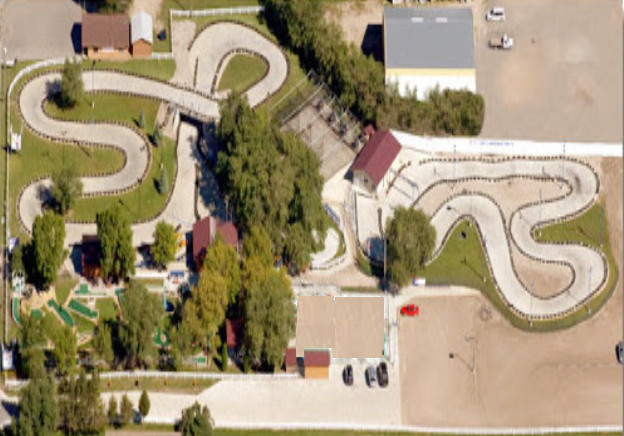

Services
- Shelby Diner - Fast food with all you can eat buffet
- Divers Canteen - Cafe lunches with a play area for younger children
- Info booth
Facilities
- Car park
- ATM
- Toilets & baby changing facilities
- Disabled access - We are disabled friendly! Ramps, accessible toilets and hand-throttle go-karts are available. Contact us if you need more information
- First aid and basic medical services
- Locker room at entrance and our Go Kart racing track with staff presence